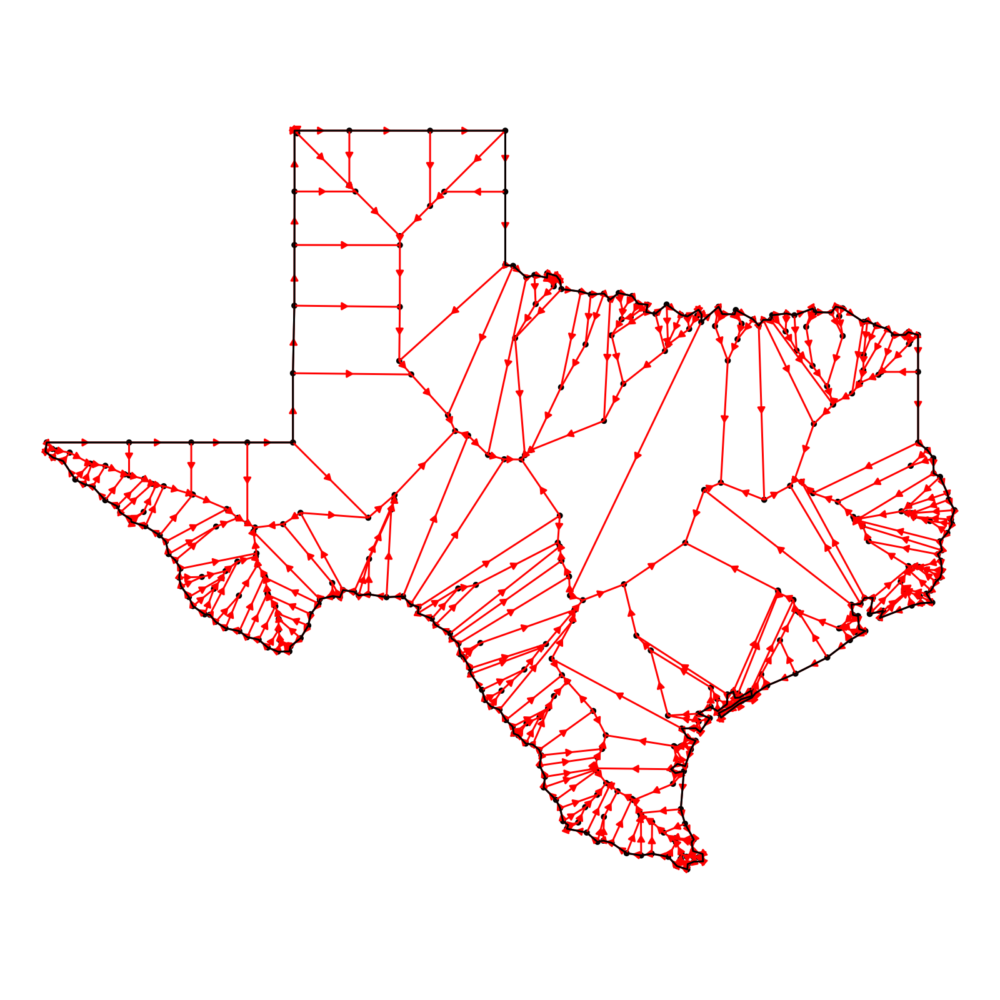
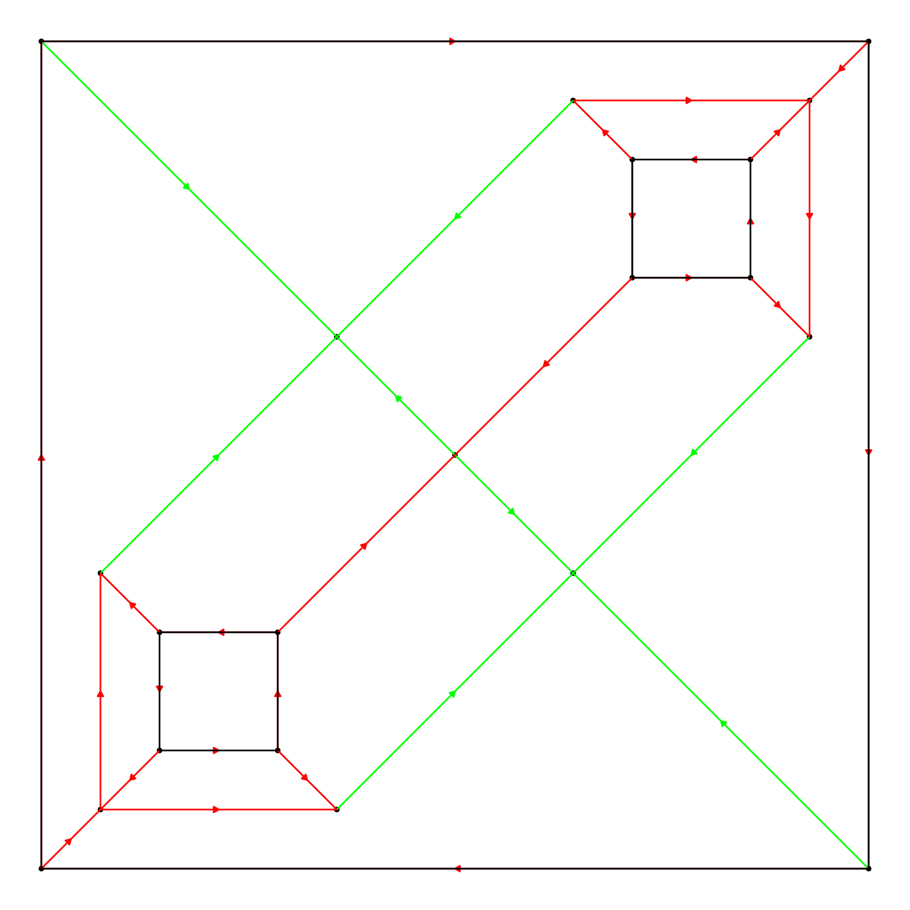
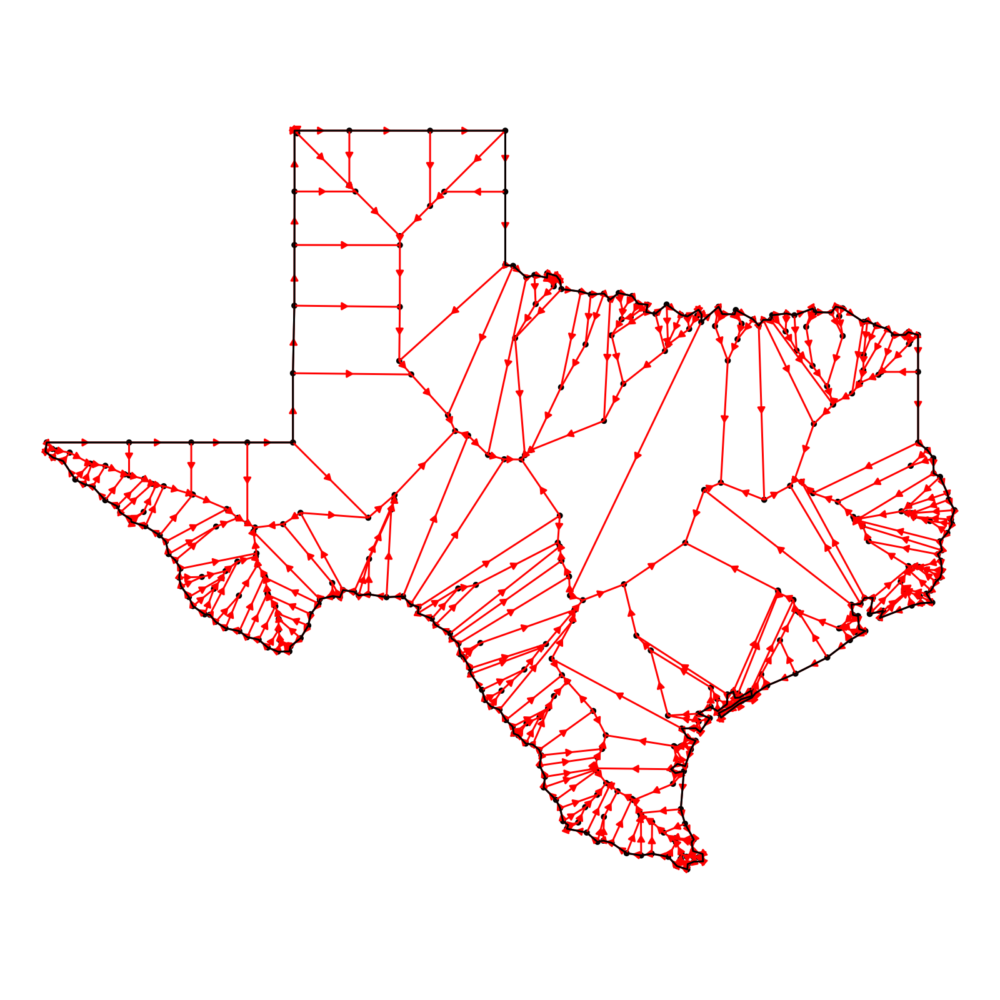
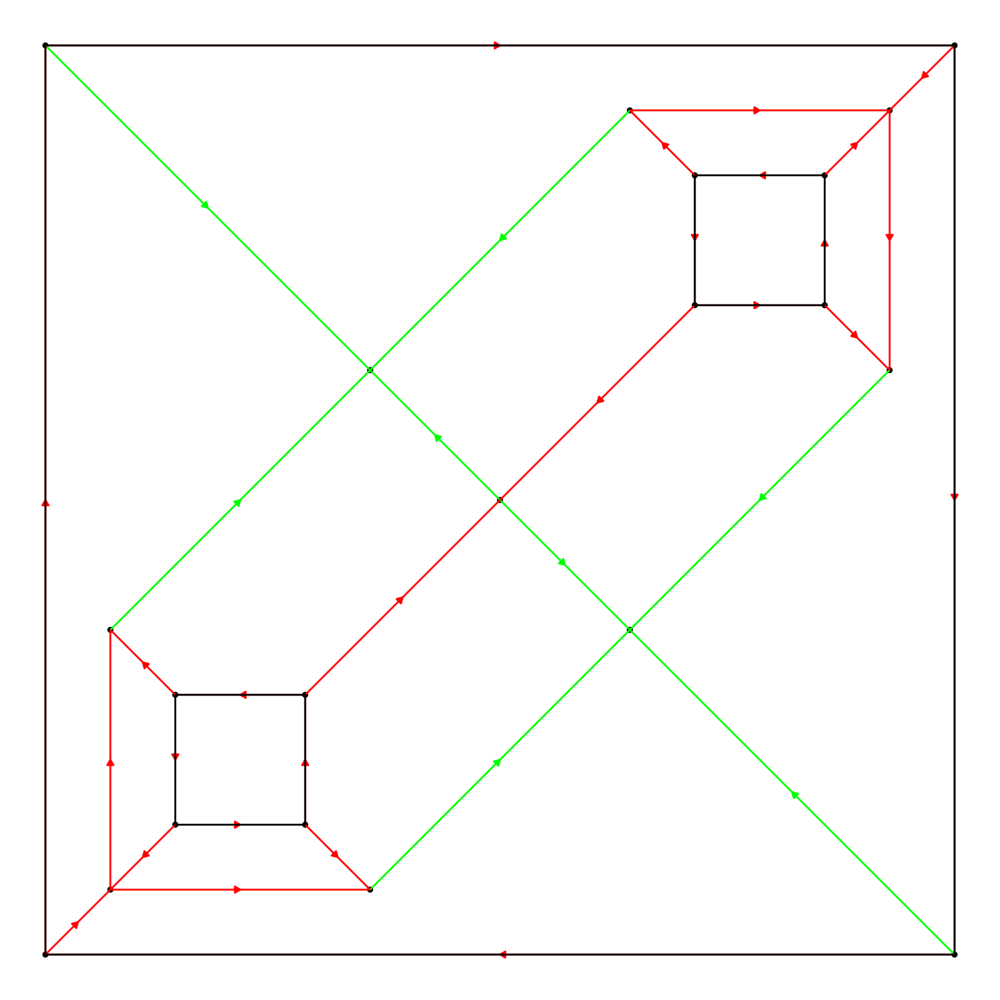

Plot the Straight Skeleton of a Polygon
plot_skeleton.RdThis function visualizes the straight skeleton derived from a given polygon. The original polygon (with holes if present) is plotted in black, while the straight skeleton is plotted in red.
Arguments
- skeleton
A list object of class 'rayskeleton' containing the straight skeleton details. It should have 'nodes' and 'links' as its primary components.
- use_arrow
Default `TRUE`. A logical value indicating whether or not to use arrows to represent the links of the straight skeleton. Default is TRUE.
- use_points
Default `TRUE`. Whether to plot the vertex points as well.
- xlim
Default`c(0,1)`. A numeric vector of length 2 specifying the x-limits of the plot in the form `c(min, max)`. These are proportional limits relative to the bounding box around the skeleton.
- ylim
Default `c(0,1)`. A numeric vector of length 2 specifying the y-limits of the plot in the form c(min, max). These are proportional limits relative to the bounding box around the skeleton.
- arrow_color
Default `"red"`. Color of the arrows.
- polygon_color
Default `"black"`. Color of the polygon.
- size
Default `1`. Size of the vertex points.
- arrow_size
Default `1`. Scales the arrow size.
- highlight_links
Default `NULL`. A numeric vector indicating which links (by their index) to highlight. If specified, the corresponding links will be colored with the `highlight_color`.
- highlight_color
Default `"purple"`. Color of the highlighted links.
- return_layers
Default `FALSE`, plots the figure. If `TRUE`, this will instead return a list of the ggplot layers.
Value
A ggplot object visualizing the straight skeleton and the original polygon.
Details
The function uses the ggplot2 package for plotting. The straight skeleton is visualized based on the details provided in the `skeleton` object. The original polygon and holes are plotted based on attributes stored in the `skeleton` object.
Examples
# Assuming skeleton1 is already defined as in the previous example
# Outer polygon
vertices = matrix(c(0,0, 7,0, 7,7, 0,7, 0,0), ncol = 2, byrow = TRUE)
# Holes inside the polygon
hole1 = matrix(c(1,1, 1,2, 2,2, 2,1, 1,1), ncol = 2, byrow = TRUE)
hole2 = matrix(c(5,5, 5,6, 6,6, 6,5, 5,5), ncol = 2, byrow = TRUE)
skeleton = skeletonize(vertices, holes = list(hole1, hole2))
plot_skeleton(skeleton)
 # Skeletonize and plot an {sf} object
if(length(find.package("spData",quiet = TRUE)) > 0) {
us_states = spData::us_states
texas = us_states[us_states$NAME == "Texas",]
plot_skeleton(skeletonize(texas))
}

# Highlighting certain links in the skeleton
max_links =which(skeleton$links$destination_time == max(skeleton$links$destination_time))
plot_skeleton(skeleton, highlight_links = max_links, highlight_color = "green")

# Skeletonize and plot an {sf} object
if(length(find.package("spData",quiet = TRUE)) > 0) {
us_states = spData::us_states
texas = us_states[us_states$NAME == "Texas",]
plot_skeleton(skeletonize(texas))
}

# Highlighting certain links in the skeleton
max_links =which(skeleton$links$destination_time == max(skeleton$links$destination_time))
plot_skeleton(skeleton, highlight_links = max_links, highlight_color = "green")
